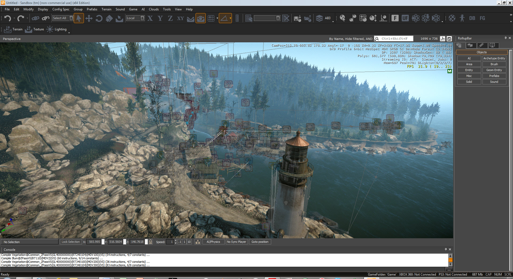
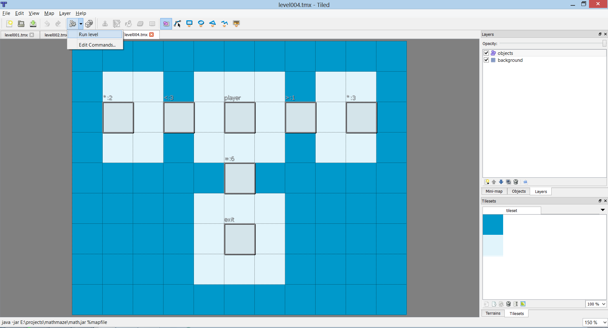

Jul 15, 2013 · 3 minute read · Comments
Games development
Last week I went to Develop in Brighton with work, had a great time and attended talks full of insight, so lucky me! While that might very well be a whole post on its own, I want to focus on Tim Sweeney“s interview on the past and future of Unreal Engine and Epic Games. More specifically, on the fact that they"ll be dropping their widely used scripting language entirely towards Unreal 4. Programmers will work exclusively with C++.
Hang on, what?! I’ve been trying so hard to master it cause I heard it"d get me a job in the industry… Now what?
That’s exactly my point.
So many people, mostly games students, tend to focus way too much on proprietary technologies arguing a high demand for them within the industry. Today, the cool kid in the block is mostly Unity but Unreal also gets a piece of the cake. As much as that may be true at this point in time, it’s a very dangerous long term investment. Please be aware that my argument doesn’t apply if you"re all about the fun of making games. If so, by all means, use whatever makes you happy.
Don’t get me wrong, learning a cool engine is always useful. Quick prototyping and discovering real life workflows are, indeed, great perks. Nevertheless, restricting yourself can backfire big time. Those who didn’t become good enough at C++ while they were playing around with the Unity scene editor, will have a much harder time getting a job once the company behind their fancy engine goes bankrupt or simply stops being popular.
As long as you"re fluent using common data structures, know how a computer memory works, understand the concepts behind algorithmic complexity (big O) and are able to write clean, fast C++ code you"ll be absolutely fine. Those skills are a must have in the games industry and even more so in AAA territory.
Are you comfortable with pointers? What about bit shifting? Avoiding string compares? Preventing memory leaks?
But loads of small and medium sized companies use Unity!
Companies want you to adapt quickly to their way of doing things and you"ll become a much more versatile programmer by being decent at a low level language. Switching from C++ to C# is relatively easy while the opposite can quickly become an awful nightmare. Hey, you can always prove you"re an amazingly fast learner by adding a scripting based project to your portfolio.
Don’t let modern shininess blind you. C++ will continue to be the most widely used language for games programming in the foreseeable future. Cool stuff will show up, but it might not be there tomorrow, don’t bet everything on the same runner.
Jun 30, 2013 · 4 minute read · Comments
Games development

Most of my spare time for the last month or so has gone to an Android pet project, which partially explains the lack of activity around here. However, such project gave me a little idea for a short tutorial flavoured article.
Level design, practically a synonym of iteration
Everybody knows how essential iteration is for games development. Ideas tend to look awesome on paper, yet most of them perform poorly when implemented. Throwing away whole features and reworking others surely isn’t new territory for you. Level designers probably know this better than anyone. Creating a greybox level and making hundreds of changes until it flows nicely and artist can know for sure where everything is going to be.
Tools like CryEngine SandBox allow lightning fast iteration by letting the creator jump into game straight from the editor to test setups. The change something and test it cycle flows incredibly nicely and no time is wasted with annoying loading screens.

Iteration can be cumbersome
Nevertheless, I"m using libgdx (check out the new website) along Tiled to make this pet project and things are different under this environment. Normally, one would go through the following process:
- Create a level with Tiled.
- Add it to the list of levels in the game. This could involve changed in an XML file or, much worse, fiddling with the source code.
- Launch the game and navigate the menus until you find the newly created level.
- Finally test it.
- “Oh, I need to move this obstacle a bit to the left”.
- Back to 1, not before wishing to be stabbed in the face.
You might think this is acceptable if a single iteration takes less than half a minute.
Wrong!
You"ll be doing this a ridiculous number of times, so you better do yourself a favor and try shorten the process.
Luckily enough, we can use Tiled to execute any command passing the map file we"re currently editing as a parameter from its main UI panel, it’s almost as good as what CryEngine does. It only requires a little effort on our side, as the game needs to accept command line parameters and interpret them, we"ll get to that later.
First, click on the gears icon in Tiled and then select Edit Commands. Create a new one and name it Run level for instance. The command will be executed from the Tiled folder, Program Files in my case. That’s why I"m using absolute paths to reach my game’s executable.
java -jar E:projectsmathmazemath.jar %mapfile

The %mapfile string is replaced by the absolute path to our level when the command is executed.
Now it’s time to make the game accept an absolute path as a parameter and load a specific level when that happens, without going through all the menus. In my case I did something similar to this.
public class Main {
public static void main(String[] args) {
String level = args.length > 0 ? args[0] : "";
new LwjglApplication(new MyGame(level), new LwjglApplicationConfiguration());
}
}
Then, in MyGame create method.
if (!mapFile.empty() {
Level level = new Level(mapFile);
gameScreen.setLevel(level);
gameScreen.setDebug(true);
setScreen(gameScreen);
}
else {
setScreen(splashScreen);
}
Within GameScreen I had to detect whether we were in debug mode and, if so, think of the level as an absolute path.
if (isDebug()) {
mapLoader = new TmxMapLoader(new AbsoluteFileHandleResolver());
}
else {
mapLoader = new TmxMapLoader();
}
TiledMap map = mapLoader.load(getLevel());
I noticed that libgdx doesn’t include an absolute path file handle resolver, so I created it. Otherwise, it"d think the file path is of the relative kind.
public class AbsoluteFileHandleResolver implements FileHandleResolver {
@Override
public FileHandle resolve(String fileName) {
return Gdx.files.absolute(fileName);
}
}
The last step was to export the game as a runnable jar to make it accessible from Tiled. After this, we can now finally run our level directly just by clicking on the gears icon. It requires some initial investment but I can assure you it pays off.
Easy as pie and fast!
May 26, 2013 · 6 minute read · Comments
Games development

That I know of…
For those who don’t know, Freegemas was my first libgdx project, which I made in a couple of weeks to learn how to use the framework. Actually, I"m not to take the credit as it’s a silly Java/libgdx port of a game made by an university mate, José Tomás Tocino. Freegemas was originally written in C++ using Gosu and both versions were open sourced under the GPL license.
Both are non profit games and are clearly inspired in the successful Bejeweled.
Freegemas added Android and HTML5 to the list of supported platforms and was published on Google Play as a free app over a year ago.

Freegemas Clone wars
Last week I got an email from an Android developer reporting that Freegemas libgdx had been ripped by a different developer called Barrilete Cósmico. The allegedly offending app was Candy Time Crush, whose name, absent doubt, comes after the popular Facebook game.

Indeed, this Candy thing was a 1:1 Freegemas clone only changing two elements, he changed the textures and added a shitload of aggressive adverts. Just look at the required permissions to get the extent of it.
- Full network access – Fair enough for basic ads.
- Phone calls – Why? The original doesn’t need it.
- Storage – Legit to read assets from memory.
- Install shortcuts without user intervention – I"m sorry, WHAT?
I proceeded to download this Freegemas mutation to make absolutely sure the app had profitability as main purpose and oh boy it did! Shit started to pop up all over the place deeming the game unplayable. I closed it immediately only to see a few new shortcuts linking to dubious products on my dashboard. Enough is enough.
But why not let other users give their opinions? You could argue I"m quite biased and since they come in all sorts of flavors, here they are.
From the self explanatory and verbose.
Emma Cheneler: It crashed my mob had to take battery out to even switch mob off. Bad bad bad.
Helen Shaw: crashed. rebooted and messed up my phone all before i got to play the game…. DOn’t DOWNLOAD…..
To the plain and simple.
Anthony Hernandez: Hate it!!.
Ironically, the joke’s on my because Candy Time Crush is a clone of my our own game. I"m perfectly aware of the limitations and scope of Freegemas. It was made in under 2 weeks after work for $deity’s sake! However, our pet project is free, has no ads and its code has helped other people learn about libgdx since it was featured in the framework’s documentation.
Oh, and it doesn’t make your phone crash.
When I checked Barrilete Cósmico’s (license offender) Google Play panel I was completely astonished. Candy Time Crush was not the only Freegemas clone, there were a total of four of them. It’s ridiculous! My surprise spiked even more when I realised the download count was over 500K in aggregate, and all those apps featured the same kind of ads. What the hell?

Of the GPL license
I wanted to clarify some of the details of GPL to illustrate why this is a shameless trespass of the license. The relevant portion is that you can copy, modify and redistribute the software as long as you make the new version available under a compatible license. And that’s the essence of it.
Taking someone else’s GPL code and redistributing it with minor changes for profit without crediting the original authors could easily be flagged as unethical. Nevertheless, that’s legally irrelevant. What matters is that it’s perfectly legal when the developer makes the code open source the code as well.
That’s fine with me. Hell! It was us who went for this license in the first place.
Unsurprisingly, this guy did no such thing.
Reactions
After discussing it with the Freegemas original author we decided to file a copyright infringement report and send it to Google with little hope they"d answer. I also emailed the author explaining the situation and listing his options.
- Remove all the clones from Google Play.
- Make their source code available under GPL.
- Get to a commercial agreement with us to split advertisement revenue.
We knew the latter wasn’t going to happen and we wouldn’t be very happy to be a part of all that aggressive advertising anyway. Personally, I don’t think Freegemas should have those pretensions, it’s too simple of a game, a two week tiny hack project with educational purposes.
He got back to me in roughly ten minutes saying he was sorry and that he was unaware of the illegality of his actions and that he took our game just to learn the ads process. He said he had ceased distribution of all four games. Well, that was fast.
On a side note, no one makes four identical games “just to learn”.
I was surprised to see Google’s response to the complaint just a couple of days later. Obviously the games had been removed so the links weren’t working anymore. I said everything was fine now and that the process didn’t need to carry on.
End of story.
Well, not really.
Today I realised the developer changed his name to CCM and Candy Time Crush is still listed among his published applications. However, the description mentions Freegemas as base for this game and adds the following note.
Licence GNU GPLv3, source code available on demand.
Apparently that makes it comply with GPL v3 even though it sounds quite cheeky. Well nothing left to do here.
Morale of the story
It would be sad to think of the morale to be that working on open source projects is a bad thing or a waste of time. There’s always going to be people who try to take credit for the work of others, regardless of the context.
I love open source because it helps me broaden and enhance my skill set, it’s good practice. Working in community is an enriching experience and most of the time I don’t have monetisation pretensions at all. Open source and commercial software are two perfectly compatible concepts anyway. Take a look at the libgdx community, there are many developers who have paid sucessful software in the market whilst contributing back all the time. Nathan and Spine are a great example with his Scene2D UI system.
The conclusion here would be that there’s a big need to raise awareness towards what software licenses mean, let alone the necessity of ethics in this field. On our end, we need to make sure the implications of the license our code is published under are perfectly clear and in a visible place.
Thanks to the fellow developer who reported this.
May 21, 2013 · 2 minute read · Comments
Games development

Very early this morning, and after 20 days of voting, Ludum Dare #26 came to an end, giving way to the much anticipated final results.
How did I do?
Without further ado, these are the scores for Lightbyrinth compared to those of my previous entry.
| Category |
Position |
Percentile (2346 entries) |
Score |
Compared to #LD24 |
| Graphics |
#242 |
90% |
3.57/5.00 |
-7.03% |
| Mood |
#326 |
87% |
3.18/5.00 |
+19.10% |
| Audio |
#400 |
83% |
2.97/5.00 |
+10.02% |
| Overall |
#457 |
81% |
3.26/5.00 |
+33.06% |
| Fun |
#485 |
80% |
3.06/5.00 |
+38.46 |
| Humor |
#670 |
72% |
2.07/5.00 |
-22.84% |
| Innovation |
#679 |
72% |
2.97/5.00 |
+90.38% |
| Theme |
#956 |
60% |
3.09/5.00 |
+17.49% |
Despite the obvious room for improvement, I"m quite happy with these results.
Primarily, my performance compared to that of #LD24 has seen a significant increase in the most relevant categories, Whoooh! This game wasn’t supposed to be funny nor have highly polished graphics. My focus was on gameplay and, fortunately, people valued that positively. Actually where are my manners? Thanks everyone who’s taken the time to play and rate it, you"re awesome and made me happy.
Secondly and speaking in absolute terms, Lightbyrinth is above average in every single category and among the best 20% in many of them. This strikes me as a great surprise having seen the extremely high standards displayed in this Ludum Dare edition. This is, of course, considering the tight dev time. Moreover, the game has passed the 2.50 milestone in everything but “Humor”, which is fair enough.
Summary, I"m very pleased but determined to improve my jamming skills toward the next edition. More gameplay and drive to get a right feel.
Don’t miss these
I would be an egotistical prick if I didn’t point you to those who stand champions of the mighty Ludum Dare #26. Hail to them.
I was also very pleased to learn that MONO by TimTipGames won in the Overall category. Not only I loved his game but also he used libgdx to make it. Bi-winning!

Seriously, go check it out.
Among the things that make Ludum Dare incredibly awesome, the community stands out. There’s people out there that took the time to gather most of the games to make a gigantic trailer. Hats off.
More compilations here.
See you in the next Ludum Dare!
May 12, 2013 · 7 minute read · Comments
Games development
Games are resource intensive applications in terms of both memory and CPU time. Offtimes it’s necessary to render hundreds of different sprites on screen whilst playing and manipulating dozens of sound effects samples. Logically, those assets need to be stored in memory and such precious elixir doesn’t come for free.
Fair enough, you can probably afford to brainlessly waste some memory on PC when working on small projects but in the world of mobile devices is just the complete opposite. Not only phones and tablets have limited memory sizes, but theirs is also shared by many hungry apps and fancy background processes. If your app’s demands causes everything else to shut down, you"re going to make your users sad.
The sooner you face this, the better. Asset management can be a pain in the arse.

Throughout this article, I"d like to illustrate some of the challenges one has to face when dealing with many assets within a medium sized project. Later on, I"ll be presenting some classic approaches to finish with one that seems to be working for me quite well. The examples are focused on the libgdx framework, although the concepts are widely applicable.
The very basics
Just to make sure we"re on the same page, these two are the very fundamental items to take into account when managing resources in a game.
- Don’t load things twice. Eg. If you have identical looking sprites, share the texture data and render it as needed.
- Don’t load anything that you won’t need in the near future. Why would you load the final level when the user has just fired up the game for the very first time?
Basically, we"re going to try to use the smallest portion of memory we possibly can at a given point in execution.
Use the AssetManager Luke
Luckily enough, libgdx provides the splendid AssetManager, so, for $deity“s sake, please don’t reinvent the wheel. Are you not using libgdx? Fear not, fellow developer, for most modern libraries feature similar components. Eg. In Ogre3D we have ResourceGroupManager class.
Take all the time you need to read the correspondent wiki page in case you were oblivious to its existence. Long story short, here’s what AssetManager can do for you.
- Store one copy of each asset.
- Reference counting.
- Inter asset dependencies handling.
- Asynchronous asset loading, keeps your app responsive.
- Easily extensible, implement your custom loaders for arbitrary types of assets.### The naive approach
The most straightforward approach is to use AssetManager to load all your assets upfront and make the manager globally available. That way you"d be able to easily retrieve resources.

public class MyGame extends Game {
private AssetManager manager;
@Override
public void create() {
super.create()
manager = new AssetManager();
loadAssets();
}
@Override
public void dispose() {
manager.dispose();
}
public AssetManager getAssetManager() {
return manager;
}
private void loadAssets() {
manager.load("data/player.png", Texture.class);
manager.load("data/enemy.png", Texture.class);
manager.load("data/bullet.png", Texture.class);
manager.load("data/ui/uiskin.json", Skin.class);
// ...
manager.finishLoading();
}
}
While this is a very comfortable thing to do and renders itself valid in most cases, we"re still loading assets that won’t be needed right away. Actually this snippet is taken almost as it was in my Ludum Dare #26 entry, and it was perfectly fine. It’s highly likely for you to get away with this. However, if you want to go the extra mile to achieve maximum performance, you know exactly what can be improved.
Slightly more advanced approaches
We only want to load the resources that will be used at a given time while avoiding being interned in a mental institution. Micromanaging everything is hard work and definitely not worth the headache in almost every situation. One question now arises.
What’s the ideal asset management granularity?
Obviously, the soft spot will be closely tied to the scope and genre in play but let’s list a few possibilities.
- Everything at a time – Not an option
- Menus, levels
- Individual menu screen, individual level, all characters
- Individual menu screen, individual level, needed characters
- Individual menu screen, streaming level chunks, needed characters
- …

Different games take different paths. On one hand you have Max Payne 3 which loads common assets upfront and then it seamlessly streams the rest as needed. On the other hand we find the Call of Duty example, where there’s a load screen masked behind a briefing before each level.
I"m a lazy bastard and that sounds like a lot of work
As you can see, it can get mental institution level of crazy in terms of deciding who loads what and when. Retrieving an asset you erroneously thought to be in memory could become an everyday issue. You want to simplify it.
The most annoying thing is to manually load each asset in the appropriate place and to handle the asynchronous process. Then why not gather resources and group them? Loading or freeing up an asset group by a single name would be much easier. I"ll leave the grouping policy entirely up to you to decide as it depends on your needs. However, it seems like the simple way to go is that each game Screen is responsible for loading and unloading its own resource group. If you think it’s going to take some time, then it might be appropriate to render a loading screen meanwhile. Moreover, you could have a base group of common assets that will always remain available.

Taking a data driven approach to group assets is like the cherry on top as it enables you to make adjustments to balance out the workload as you iterate on the process. I started using XML as file format but JSON or similar would also be fit. Here’s an example.
<assets >
<group name="base">
<asset type="com.siondream.core.animation.AnimationData" path="data/caveman.xml" />
<asset type="com.siondream.core.physics.PhysicsData" path="data/caveman_physics.xml" />
<asset type="com.badlogic.gdx.scenes.scene2d.ui.Skin" path="data/ui/uiskin.json" />
</group>
</assets>
Qualified types and reflection are used to make the AssetManager#load calls.
Grouped Asset Manager code
Here’s the full implementation for my Asset class. It’s kind of a small layer on top of the libgdx AssetManager. Feel free to use it, bin it or change it. However, be advised that I don’t plan to offer further continued for it, this is simply to illustrate my approach.
public class Assets implements Disposable, AssetErrorListener {
private static final String TAG = "Assets";
private Logger logger;
private AssetManager manager;
private ObjectMap<String, Array<Asset>> groups;
public Assets(String assetFile) {
logger = new Logger(TAG, Logger.INFO);
manager = new AssetManager();
manager.setErrorListener(this);
manager.setLoader(PhysicsData.class, new PhysicsLoader(new InternalFileHandleResolver()));
manager.setLoader(AnimationData.class, new AnimationLoader(new InternalFileHandleResolver()));
loadGroups(assetFile);
}
public void loadGroup(String groupName) {
logger.info("loading group " + groupName);
Array<Asset> assets = groups.get(groupName, null);
if (assets != null) {
for (Asset asset : assets) {
manager.load(asset.path, asset.type);
}
}
else {
logger.error("error loading group " + groupName + ", not found");
}
}
public void unloadGroup(String groupName) {
logger.info("unloading group " + groupName);
Array<Asset> assets = groups.get(groupName, null);
if (assets != null) {
for (Asset asset : assets) {
if (manager.isLoaded(asset.path, asset.type)) {
manager.unload(asset.path);
}
}
}
else {
logger.error("error unloading group " + groupName + ", not found");
}
}
public synchronized <T> T get(String fileName) {
return manager.get(fileName);
}
public synchronized <T> T get(String fileName, Class<T> type) {
return manager.get(fileName, type);
}
public boolean update() {
return manager.update();
}
public void finishLoading() {
manager.finishLoading();
}
public float getProgress() {
return manager.getProgress();
}
@Override
public void dispose() {
logger.info("shutting down");
manager.dispose();
}
@Override
public void error(String fileName, Class type, Throwable throwable) {
logger.error("error loading " + fileName);
}
private void loadGroups(String assetFile) {
groups = new ObjectMap<String, Array<Asset>>();
logger.info("loading file " + assetFile);
try {
XmlReader reader = new XmlReader();
Element root = reader.parse(Gdx.files.internal(assetFile));
for (Element groupElement : root.getChildrenByName("group")) {
String groupName = groupElement.getAttribute("name", "base");
if (groups.containsKey(groupName)) {
logger.error("group " + groupName + " already exists, skipping");
continue;
}
logger.info("registering group " + groupName);
Array<Asset> assets = new Array<Asset>();
for (Element assetElement : groupElement.getChildrenByName("asset")) {
assets.add(new Asset(assetElement.getAttribute("type", ""),
assetElement.getAttribute("path", "")));
}
groups.put(groupName, assets);
}
}
catch (Exception e) {
logger.error("error loading file " + assetFile + " " + e.getMessage());
}
}
private class Asset {
public Class<?> type;
public String path;
public Asset(String type, String path) {
try {
this.type = Class.forName(type);
this.path = path;
} catch (ClassNotFoundException e) {
logger.error("asset type " + type + " not found");
}
}
}
}
Conclusions and further improvements
This small grouped asset manager will do the trick for me. Nevertheless I believe it could be improved in a few ways.
- JSON format for faster parsing.
- Automatically scan asset folders.
- Associate file extensions to asset types. * …
Anyhow, I hope I made my point of showing some different approaches to asset management along their pros and cons. I"d love to hear your thoughts on the topic, and were you to find yourself disagreeing with me, by all means, share your point of view.